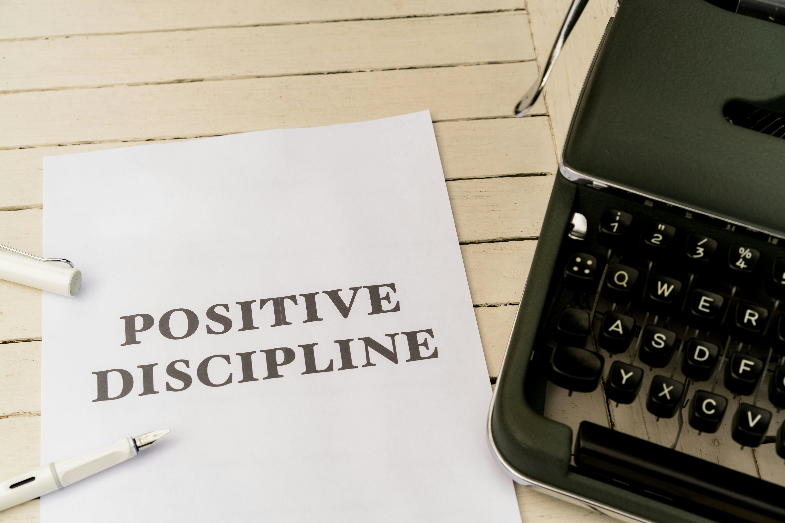

THE 5AM CLUB
Own Your Morning. Elevate Your Life.
ABOUT THE CLUB
The 5am Club is built on the belief that how you begin your morning determines the quality of your entire day. Rising early creates a quiet space where discipline is forged and clarity is sharpened before the noise of the world begins. This time is dedicated to strengthening the body, sharpening the mind, and aligning your actions with your long-term purpose. Every sunrise becomes a reminder that progress belongs to those who prepare before others even wake. Members of the 5am Club follow a structured approach to growth. The early hours are used intentionally — through exercise that builds strength and resilience, learning that expands knowledge and skill, and reflection that strengthens emotional control and focus. This daily rhythm turns small actions into powerful habits that compound into long-term success.

5AM BLOG POSTS
The Power of Waking Up at 5AM
Discover how rising at 5AM gives you a mental and strategic advantage over the rest of the world. This article explains how early mornings create uninterrupted time for self-improvement, focus, and productivity that sets the tone for a successful day.
Read moreBuilding Discipline Through the 5AM Routine

This post explores how consistent early rising strengthens discipline and self-control. Learn how small daily actions in the early hours develop into powerful habits that shape long-term success.
Read moreA Simple 5AM Club Morning Routine That Works

Learn a practical and realistic structure for your early mornings. This guide breaks down how to divide your time between exercise, learning, planning, and reflection to maximize growth before the day begins.
Read moreWhy the 5AM Club Creates Stronger Minds
Understand how waking early improves mental clarity, emotional control, and decision-making. This article explains how quiet morning hours help you think clearly and stay focused on your goals.
Read moreFrom Lazy Mornings to Productive Days
This article shows how adopting a 5AM routine can transform unproductive habits into structured daily progress. It focuses on the mindset shift required to move from comfort to discipline.
Read moreHow the 5AM Club Accelerates Personal Growth
Explore how early rising speeds up improvement in health, skills, and confidence. This post explains how consistent morning routines create long-term transformation and measurable progress.
Read more